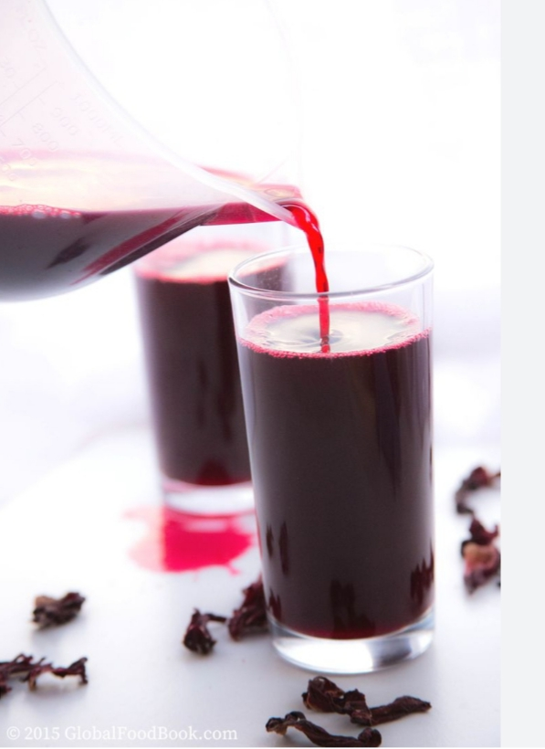

HAMMY'S SOBOLO RECIPE
Sobolo is an African hibiscus drink that varies significantly across regions and cultures. While some recipes use just hibiscus petals, sugar, and orange, West African versions often add ginger, cloves, and pineapple. The Ghanaian variation is uniquely spicy, utilizing an intense mix of local spices like dried chilies, peppercorns, and grains of paradise.
Preperation Time
- TOTALApproximately 40 minutes
- PREPARATION10-15 minutes
- COOKING25-30 minutes
Ingredients
- Hibiscus leaves
- Cloves
- Ginger
- Star anise(optional)
- Pineapple(peels and juice)is used
- Slice of lemon and orange(optional)
- Pineapple and Strawberry essence(optional)
- Sugar or Honey
Instructions
- Clean: You will need to clean the pineapple by soaking a vinegar and water solution to make sure it is clean. Fill up the sink with water and add a few splashes of vinegar
- Prep Ingredients: This is where the most work is done. Peel off the skin, pluck a few of the leaves from the crown and chop up the pineapple fruit into cubes. Peel the ginger and grind or blend with cloves
- Blend: Blend the pineapple, ginger and cloves till smooth
- Boil Drink: In a large pot, combine all the ingredient in water and let it come to a boil. Once it has boiled, add the hibiscus leaves and let is steep at a rolling boil for 30 minutes
- Cool: After the 30 minutes, turn off the heat, add your sugar or honey to taste (adding in bits till desired sweetness) and let the drink completely cool
- Strain: Once the drink has completely cooled, you will need to strain out the liquid with a fine mesh strainer. Use clean hands and do not be afraid to get your hands in there and squeeze out the liquid from the fruits sitting in the drink.
- Serve:Best served chilled
Nutrition
The table below shows nutritional values per serving
| Calories | 90-120kcal |
|---|---|
| Carbohydrates | 22-28g |
| Protein | 0-1g |
| Fat | 0g |
Values are approximate and will vary based on the amount of sugar or honey used.